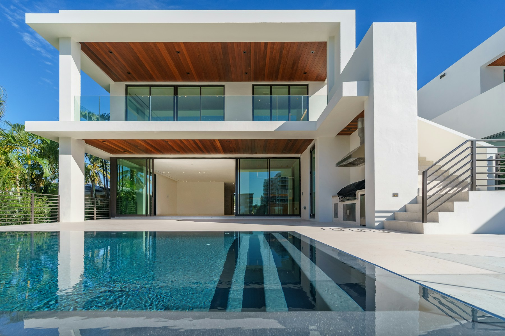
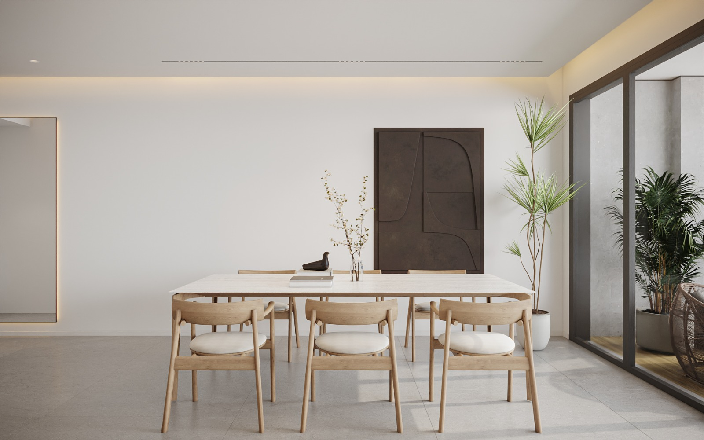

01
Collection limitée
Un nombre restreint de projets pour préserver la qualité du suivi.
.jpg)
Une collection limitée de villas, une équipe impliquée à chaque étape et une relation directe avec chaque propriétaire.
Latitude Samui développe une collection volontairement limitée. Cette échelle permet de suivre chaque villa avec davantage de précision et de conserver une relation directe avec son futur propriétaire.
Chaque projet part d’un terrain, d’une orientation et d’un mode de vie. L’objectif n’est pas de reproduire un catalogue à l’identique, mais de proposer une base architecturale cohérente que les finitions viennent ensuite personnaliser.
Un nombre restreint de projets pour préserver la qualité du suivi.
Une supervision opérationnelle des terrains, chantiers et partenaires à Koh Samui.
Des approches de finition intérieure et paysagère adaptées au projet.
Une coordination claire du premier échange à la remise des clés.

Latitude Samui coordonne directement le développement des villas et le suivi des chantiers avec les équipes et partenaires locaux. Cette organisation réduit les ruptures d’information et permet une lecture plus claire des décisions.
Le suivi porte sur les étapes de construction, les matériaux, les finitions et la documentation de l’avancement. Les architectes, ingénieurs, entreprises et avocats conservent naturellement leurs responsabilités professionnelles.
Les pages villas permettent d’explorer différentes approches pour l’intérieur et le jardin avant de demander une estimation contextualisée.
Découvrir les villas
Chaque associé intervient dans un domaine précis tout en gardant une vision commune du projet et de l’expérience client.

Entrepreneur expérimenté, il pilote la stratégie, les partenariats et le développement de Latitude Samui.
Il coordonne les décisions commerciales et la relation avec les partenaires locaux du projet.

Professionnel du bâtiment installé à Koh Samui, il supervise les chantiers, les équipes locales et la qualité d’exécution.
Son rôle est de relier les plans, les choix de finition et la réalité quotidienne du terrain.

Formé en finance d’entreprise et en informatique, il supervise l’écosystème numérique et les parcours clients.
Il coordonne aussi les solutions de paiement international et crypto avec les prestataires spécialisés.
.jpg)
Les modalités d’acquisition en Thaïlande dépendent de la situation de l’acheteur et de la structure du projet. Latitude Samui facilite les échanges avec les avocats partenaires, qui présentent les options possibles et réalisent les vérifications juridiques.
Latitude Samui ne remplace pas le conseil juridique indépendant : l’objectif est d’organiser un parcours clair, documenté et compréhensible.
Selon les besoins du propriétaire, des services d’entretien, de jardin, de piscine, de conciergerie ou de gestion locative peuvent être organisés avec les partenaires locaux.